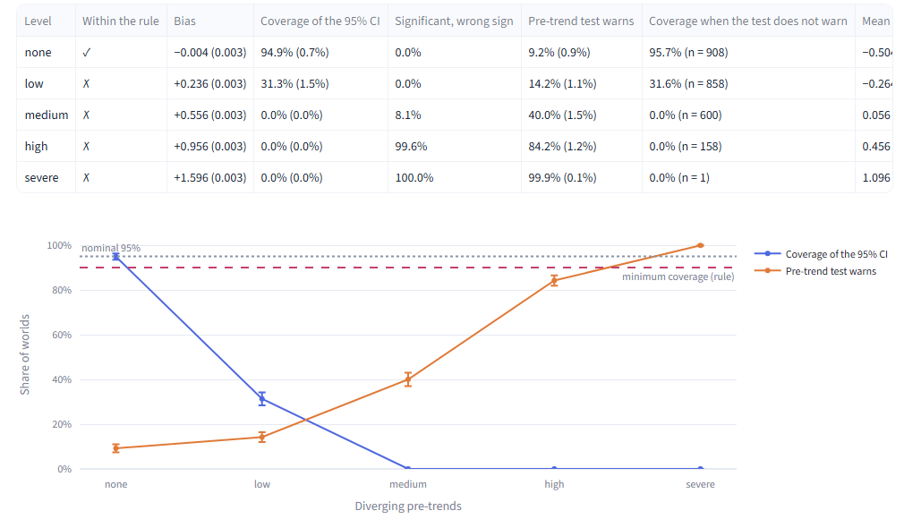

Causal Lab reads your research question first, picks a method only once you confirm, and shows you where your design breaks.
You type
Is smoking associated with lung cancer? Smoking and lung cancer: to confirm. Associated with: unclear.
Causal Lab answers
No method yet. First: do you want a causal effect?
For students and researchers with a causal question who are about to choose a method. Free hosting: if the app is asleep, wake it and wait about half a minute.
It reads your question first.
Type Is smoking associated with lung cancer? Causal Lab says the question is unclear, marks smoking and lung cancer “to confirm”, and asks whether you want a causal effect. It does not pick a method until it knows what you want to know.
How well the question reader does, on frozen sets of published titles: precision 0.95 and recall 0.60 (fails its 0.70 target) on set 2; 1.00 and 0.83 on set 3, where version 2 scores 0.80; 0.96 and 0.86 on set 4, where version 2 scores 0.79. All four evaluations ↓

It picks a method only once you confirm.
Ask What is the causal effect of receiving a scholarship on university enrollment among students whose entrance exam scores are near the scholarship eligibility cutoff? It reads a causal effect, quotes the treatment and the outcome, and labels the cutoff as an inference, not a fact. Once you confirm the form, it recommends regression discontinuity and says why difference-in-differences would estimate something else.
- Stated: “the causal effect of receiving a scholarship on university enrollment”.
- Inferred from “near the scholarship eligibility cutoff”, and asked back to you.
- Before this, no method is recommended.
- A local effect at the cutoff. Difference-in-differences would estimate a different quantity (the ATT).

The main result: difference-in-differences can fail while its test stays quiet.
Difference-in-differences on 1,000 simulated worlds with a known effect of −0.50. With low diverging pre-trends, the estimate is off, on average, by 47% of the true effect (bias +0.236), and the 95% interval covers the truth in only 31.3% of all 1,000 worlds. The usual pre-trend test warns in just 14.2% of them. This is a known problem (Roth, 2022); Causal Lab lets you watch it happen.
Effect size: bar length is the size relative to the true effect
Worlds: bar length is a share of worlds
Diverging pre-trends, low level, 1,000 simulated worlds. Both groups are drawn to scale: the first against the true effect; in the second, the top bar against all 1,000 worlds and the bottom bar against the 858 quiet ones (31.6% of them cover the truth; over all 1,000 worlds, 31.3% do). The average estimate is the mean of the 1,000 estimates. Source: the stored study, DEMO_DETAILS.md and results.json.


In 30 seconds
How it was checked
-
Tests
The full test suite runs on every push and pull request, with the newest and the oldest supported versions of its dependencies (GitHub Actions).
-
The simulation study
Four threats × five levels × 1,000 worlds, every replication stored with its seed. Difference-in-differences is judged acceptable when its bias is at most 10% of the true effect and its 95% interval covers the truth in at least 90% of worlds. That rule was fixed on 2026-10-30, after the pre-trends results were seen and before the three other threats were simulated (details).
-
The question reader
Four frozen evaluations on 230 published article titles, failures included. It never recommended a method from the question alone. Recall is the share of causal questions it reads as causal (target 0.70); precision is how often it is right when it says causal.
Set Version Precision Recall Version 2, same set 1 (56 titles) 1 0.95 0.64, fails 2 (58 titles) 2 0.95 0.60, fails 3 (58 titles) 3 1.00 0.83 (v2 0.80) 0.80 4 (58 titles) 3.1 0.96 0.86 (v2 0.79) 0.79 Most of the later gain is the set, not the code: version 2 scores 0.80 and 0.79 on the last two sets. The labels come from one rater. All four reports.
What it is not
It helps you choose and understand a design. It does not establish causal identification.
Identification rests on assumptions about the world that data can sometimes refute and never prove. Causal Lab tells you which assumptions your design needs, and shows what happens when they fail.